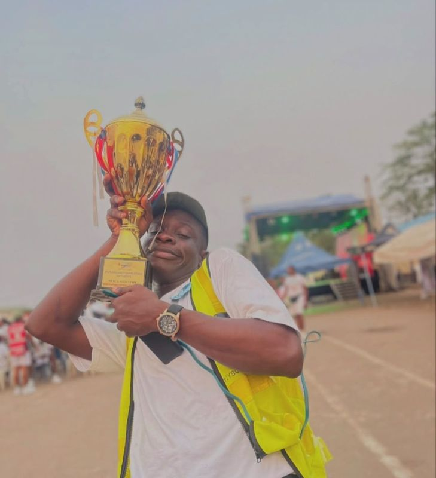
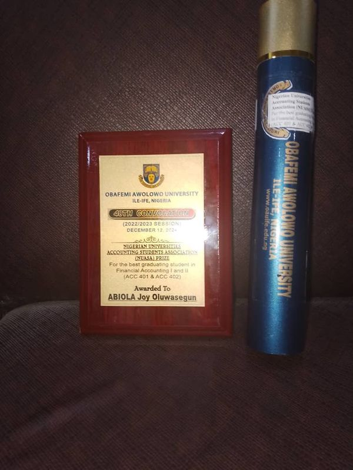
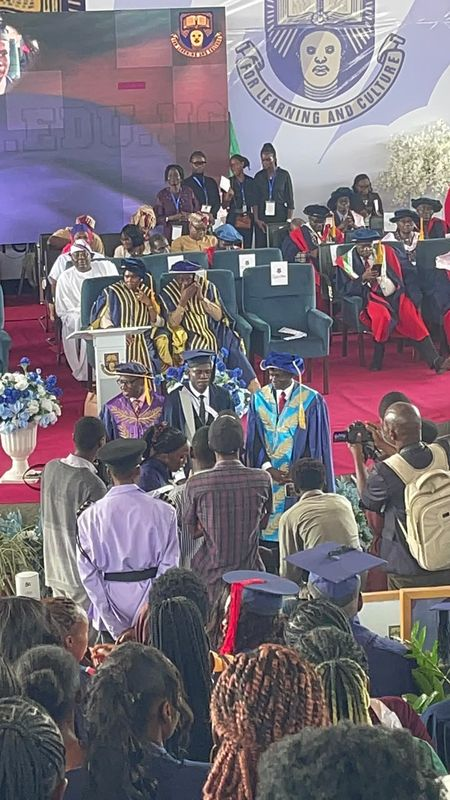

"Step up, be intentional, choose values over convenience, and challenge the people around you to be better." From my writing on Medium →
I'm Joy Abiola, a chartered accountant and investment analyst in Lagos. An accounting alumnus of Obafemi Awolowo University, I work at the operational core of investment management, where transactions settle, portfolios move, and reporting must be exact.
My path runs from student-union budget stewardship at OAU through asset operations and credit desks, to the investment floor at Zedcrest Group. The thread through all of it: structural accuracy, and building the frameworks that create value rather than just recording it. Along the way I convened speakers and brands, from Babafemi Ojudu to Money Africa and Dukiya Investments, to bring financial literacy to thousands of students.
— 01Experience
-
Feb 2026 – Present
Investment Analyst
Zedcrest Group · Lagos
- I manage the end-to-end lifecycle of investment transactions and portfolio movements.
- I drive settlement efficiency while maintaining 100% regulatory compliance and high-precision financial reporting.
-
Nov 2024 – Jan 2026
Asset Operation Management Intern
Africa Plus Partners Nigeria Limited
- Supported the Asset Operations team in managing the operational efficiency of investee companies and operating assets across the full asset life cycle.
-
Sep – Oct 2023
Credit Operations Intern
AFEX · Lagos
- Shadowed analysts through live work proceedings and handled data entry on firm financials.
-
Mar 2022 – Jul 2023
Financial Secretary, Great Ife Students' Union
Obafemi Awolowo University
- Kept the union's accounts and prepared and presented the budget of its central executive council.
- Organized the Financial Independence & Literacy Summit, drawing 2,000+ students across faculties.
- Administered scholarships for 17 students through the indigent student fund initiative.
-
2019 – 2024
Class Governor
Obafemi Awolowo University · Ile-Ife
- Coordinated the affairs of a class of 404 students, including academic webinars that lifted pass rates.
— 02Leadership & recognition
-
Service
Scholarships for 17 indigent students
- Funded through the indigent-students initiative I ran as Financial Secretary of the Great Ife Students' Union.
-
Speaking
Invited speaker, OAU Unplugged
- Spoke on "The Good, The Bad & The Lessons": student leadership, service, and life after graduation.
-
Leadership
NYSC Platoon 4, Lagos orientation camp
- Led the platoon to 15+ camp awards, including Best Platoon on Duty.

-
Award
Best Student in Advanced Financial Accounting
- NUASA Prize for the best graduating student in Financial Accounting I & II (ACC 401 & 402), awarded at OAU's 48th Convocation, December 2024.


-
Awards
Student leadership honors
- Most Outstanding Class Representative · Most Influential Student · Leadership Award.
— 03Education & certifications
-
2019 – 2024
B.Sc. Accounting
Obafemi Awolowo University
-
Certifications
- Associate Chartered Accountant (ACA), Institute of Chartered Accountants of Nigeria
- Association of Accounting Technicians, West Africa (AAT)
- Financial Modeling & Valuation Analysis (FMVA)
— 04Contact
Open to conversations about analyst roles, finance teams, and the markets I work in.